Всем привет, друзья! Сегодня мы подробно рассмотрим, что такое Gulp и как с его помощью можно автоматизировать работу Front-end разработчика. В результате урока мы соберем серьезное и внушительное рабочее Front-end окружение для веб-разработки с использованием Gulp.
Видео урок:
Основные ресурсы урока:
Node.js: https://nodejs.org/en/
Gulp: http://gulpjs.com/
Bower: http://bower.io/
Browsersync: https://browsersync.io/
Проект-пример из данного урока вы можете посмотреть на GitHub и скачать: https://github.com/agragregra/gulp-lesson
Gulp - это инструмент, который помогает автоматизировать рутинные задачи веб-разработки. Gulp предназначен для решения таких задач, как:
- Создание веб-сервера и автоматическая перезагрузка страницы в браузере при сохранении кода, слежение за изменениями в файлах проекта;
- Использование различных JavaScript, CSS и HTML препроцессоров (CoffeeScript, Less, Sass, Stylus, Jade и т.д.);
- Минификация CSS и JS кода, а также, оптимизация и конкатенация отдельных файлов проекта в один;
- Автоматическое создание вендорных префиксов (приставок к названию CSS свойства, которые добавляют производители браузеров для нестандартных свойств) для CSS.
- Управление файлами и папками в рамках проекта - создание, удаление, переименование;
- Запуск и контроль выполнения внешних команд операционной системы;
- Работа с изображениями - сжатие, создание спрайтов, ресайз (png, jpg, svg и др.);
- Деплой (отправка на внешний сервер) проекта по FTP, SFTP, Git и т.д.
- Подключение и использование в проекте безгранично большого количества Node.js и Gulp утилит, программ и плагинов.
- Создание различных карт проекта и автоматизация другого ручного труда.
Можно с уверенностью сказать, что Gulp и множество утилит, написанных для него, подходят для решения практически любой задачи при разработке проекта любой сложности - от небольшого сайта до крупного проекта.
Любой проект, использующий Gulp имеет в корне файл gulpfile.js, который содержит набор инструкций по управлению проектом. Сразу хочется сказать, что написание инструкций для Gulp не является программированием, хотя пишутся на языке JavaScript. Не стоит пугаться больших gulpfile.js, в основном все инструкции однотипные и имеют общие черты. К тому времени, как вы прочтете данное руководство, у вас не должно остаться вопросов по Gulp, так как система сборки элементарная. Но если у вас останутся вопросы - обязательно пишите в комментариях.
Установка Gulp
Для работы с Gulp у вас должен быть установлен Node.js. Установка Node.js для различных платформ довольно простая - скачиваете инсталлер Node для своей операционной системы и устанавливаете. Я рекомендую устанавливать последнюю версию Stable. Для пользователей Linux я подготовил отдельное видео руководство по установке:
Обратите внимание, что при установке Node.js необходимо отметить галочками установку npm и добавление программы в Path: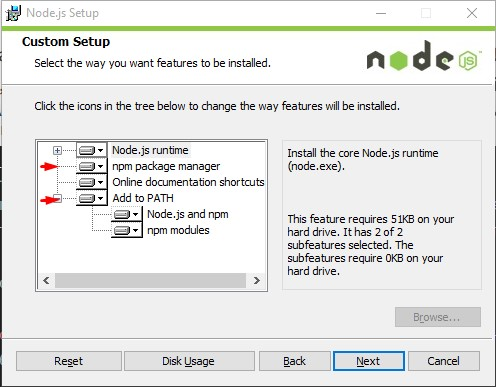
После того, как Node установлен, можно приступать к установке Gulp. Откройте терминал (Командная строка в Windows) и выполните следующую команду:
npm i gulp -g
Для пользователей Mac и Linux, возможно, придется выполнять команды с правами суперпользователя, sudo.
Из данной команды мы видим, что запускается менеджер пакетов npm (Node Package Manager), который командой install устанавливает Gulp в систему. Ключ -g говорит о том, что пакет установится в систему глобально, то-есть в систему, а не в папку проекта. Без ключа -g пакет устанавливаются в ту папку, в которой выполняются текущие команды, поэтому будьте внимательны.
Создание проекта Gulp
Давайте создадим папку проекта для примера, с которой будем работать, пусть это будет, например, папка myproject.
Очень важно! Не создавайте русскоязычные папки проектов и следите за тем, чтобы путь до папки проекта не содержал кириллических символов, то-есть не был написан на русском языке. В противном случае, у вас могут возникнуть проблемы при работе различных утилит Gulp. Папка вашего пользователя также не должна быть русскоязычной. Всё только латинскими буквами.
Теперь откроем терминал в папке проекта. Для пользователей Windows достаточно зажать Shift и открыть контекстное меню. В нем появится пункт "Открыть окно команд":
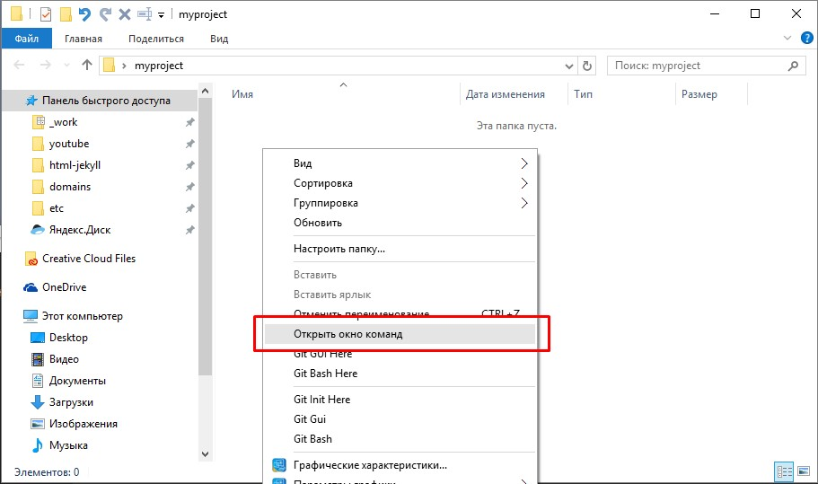Далее выполним инициализацию проекта в той папке, которую создали:
npm init
Следуя инструкциям, заполним метаинформацию о нашем проекте:
-
Назовем проект "MyProject"
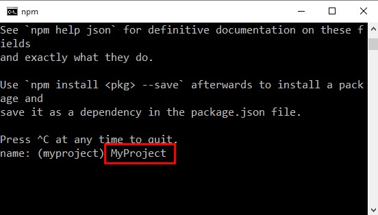 -
Оставим версию текущей - 1.0.0
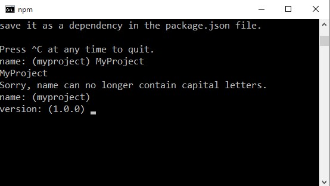 -
Введем краткое описание проекта - My First Gulp Project:
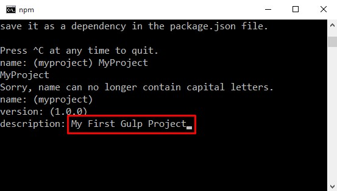 - entry point, test command, git repository, keywords оставим по-умолчанию.
-
Имя автора можно и указать :-)
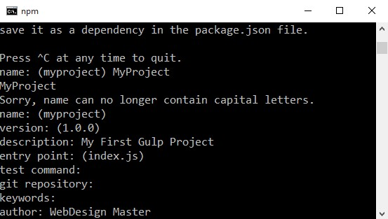 -
license оставляем по-умолчанию и вводим yes:
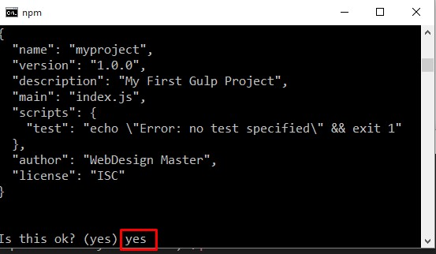
В результате такой несложной первоначальной настройки нашего нового Gulp проекта в папке myproject нарисуется новый файл package.json.
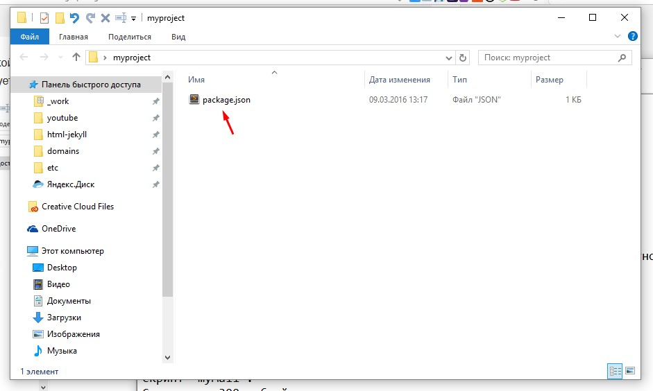Файл package.json является файлом манифеста нашего проекта, который описывает помимо той информации, что мы внесли в терминале, еще и информацию об используемых пакетах в нашем проекте.
Например, если мы установим в проект Gulp с ключом --save-dev, то пакет и используемая версия автоматически добавится в наш package.json. Такой учет позволит быстро разворачивать новый проект с использованием уже имеющегося package.json и устанавливать необходимые модули с зависимостями, которые прописаны в package.json в новых проектах.
Давайте установим в наш проект Gulp:
npm i gulp --save-dev
Что мы видим из данной строки: npm устанавливает пакет gulp в текущую папку myproject (потому, что нет ключа -g, устанавливающий пакет глобально в систему) и сохраняет название пакета с версией в файл package.json:
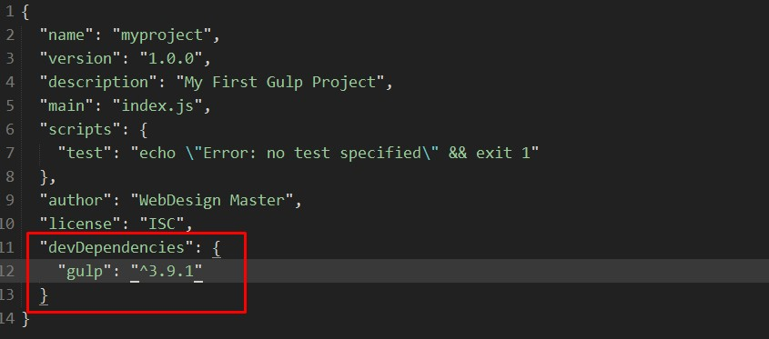Кроме того, у нас появляется папка node_modules, которая теперь содержит установленный пакет gulp и необходимые зависимости. В данную папку автоматически будут сваливаться все модули и зависимости, которые мы будем устанавливать в проект. Папок с зависимостями может быть очень много, не смотря на то, что мы установили не так уж и много пакетов. Это связано с тем, что в дополнение к основным пакетам устанавливаются программы, необходимые для корректной работы основного пакета. Ни чего чистить и удалять из папки node_modules не нужно.
Общепринятая структура каталогов в проектах
Работая с различными плагинами, программами и скриптами, будь то jQuery плагин, модуль для CMS, веб-проект или какое-то другое ПО, вы наверняка замечали, что у всех проектов есть общая структура каталогов, например, большинство проектов имеет папку dist и app. Давайте создадим первоначальную структуру нашего учебного проекта по всем правилам хорошего тона веб-разработки. В результате мы должны создать следующую структуру в нашем проекте myproject (все файлы, которых не было, пока создаем пустыми):
-
myproject/
-
app/
- css/
- fonts/
- img/
- js/
- sass/
- index.html
- dist/
- node_modules/
- gulpfile.js
- package.json
-
app/
Данная структура встречается довольно часто, практически во всех проектах, но это не аксиома и некоторые проекты могут иметь вообще другую структуру. Для данной статьи мы будем использовать именно такую структуру проекта.
Здесь мы видим папку app/, в которой будут размещены все исходные материалы проекта - оригинальные CSS, Sass, js файлы библиотек, оригинальные изображения. В общем - это папка исходников нашего проекта.
Папка dist/ будет содержать уже готовый продукт, оптимизированный, сжатый, причесанный. Это папка продакшена.
gulpfile.js
Теперь давайте откроем в редакторе кода gulpfile.js и напишем в него:
var gulp = require('gulp');
Данной строчкой мы подключаем Gulp к нашему проекту, посредством функции require. Данная функция подключает пакеты из папки node_modules в наш проект, присваивая их переменной. В данном случае, мы создаем переменную gulp.
Далее мы уже можем работать с этой переменной и создавать таски (инструкции).
gulp.task('mytask', function() {
console.log('Привет, я таск!');
});
mytask - это название команды, которую вы будете вызывать в нужном вам месте gulpfile.js. Кроме того, можно в командной строке выполнить таск напрямую, написав:
gulp mytask
gulpfile.js:
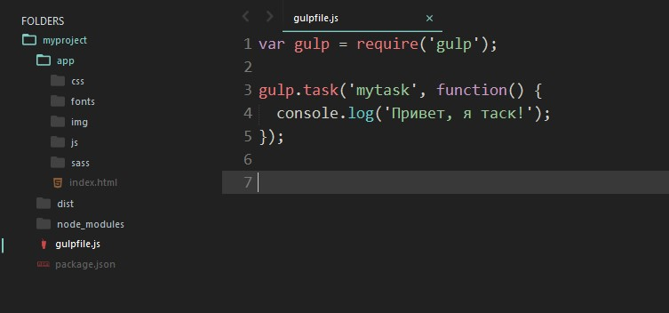Результат выполнения команды gulp mytask:
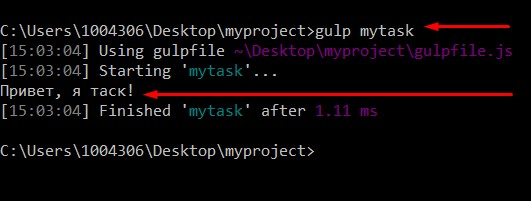Это, конечно очень простой базовый пример создания таска. Как правило, таски несколько сложнее и включают некоторые дополнительные команды:
gulp.task('mytask', function () {
return gulp.src('source-files') // Выборка исходных файлов для обработки плагином
.pipe(plugin()) // Вызов Gulp плагина для обработки файла
.pipe(gulp.dest('folder')) // Вывод результирующего файла в папку назначения (dest - пункт назначения)
})
- gulp.src - выборка исходных файлов проекта для обработки плагином;
- .pipe(plugin()) - вызов Gulp плагина для обработки файла;
- .pipe(gulp.dest('folder')) - вывод результирующего файла в папку назначения (dest - пункт назначения).
Это база Gulp, теперь можно создавать инструкции. Для начала давайте создадим обработчик, который будет компилировать Sass файлы в CSS (CSS препроцессинг).
Gulp Sass
Давайте установим пакет gulp-sass в наш проект с сохранением версии и названия в package.json.
Обратите внимание, что любые Gulp пакеты, для любых задач, легко гуглятся и имеют вполне исчерпывающие инструкции по подключению на своих хоумпейджах и в документации.
npm i gulp-sass --save-dev
Далее подключим gulp-sass в файле gulpfile.js. Обратите внимание, что переменные для подключения пакетов можно перечислять через запятую:
var gulp = require('gulp'),
sass = require('gulp-sass'); //Подключаем Sass пакет
Давайте создадим в папке app/sass файл main.sass, зададим в нем фон body - черный и напишем для него обработчик в gulpfile.js
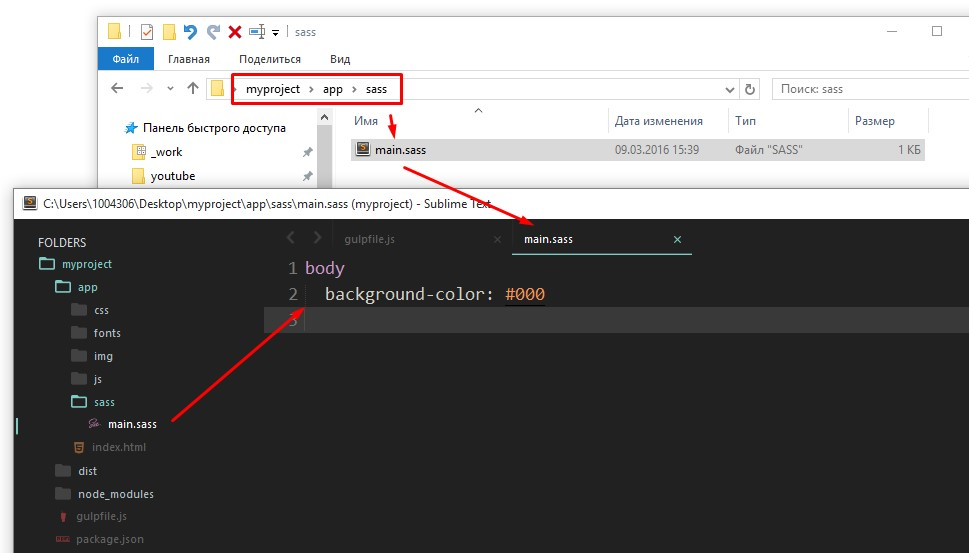gulpfile.js:
var gulp = require('gulp'), // Подключаем Gulp
sass = require('gulp-sass'); //Подключаем Sass пакет
gulp.task('sass', function(){ // Создаем таск "sass"
return gulp.src('app/sass/main.sass') // Берем источник
.pipe(sass()) // Преобразуем Sass в CSS посредством gulp-sass
.pipe(gulp.dest('app/css')) // Выгружаем результата в папку app/css
});
После этого, логичным будет выполнить в терминале наш новый таск sass:
gulp sass
В результате выполения данной команды в папке app/css появится файл main.css.
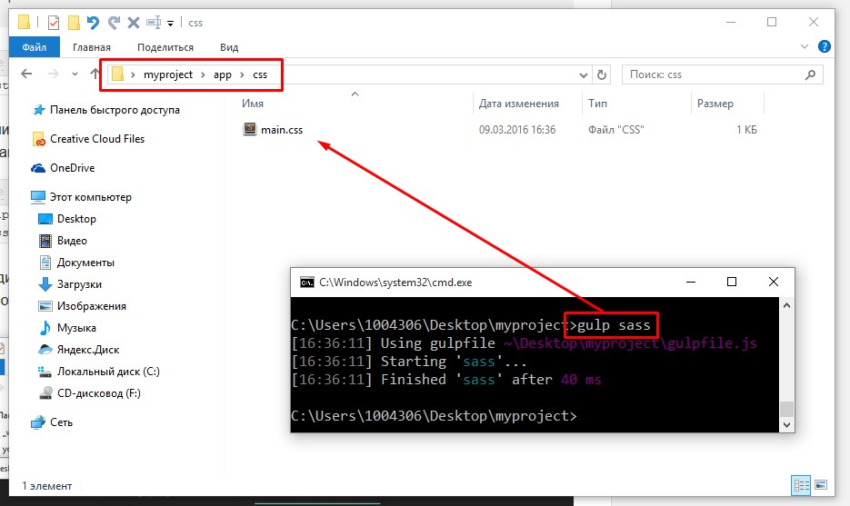От таки чудеса, друзя. Как видим, все просто :-)
Выборка файлов для gulp.src
В принципе, мы рассмотрели все, что необходимо знать о Gulp, теперь будем углубляться в каждую деталь того, что было изложено выше.
Выборка файлов в примере выше довольно простая, мы брали файл напрямую: gulp.src('app/sass/main.sass'). Но файлы также можно выбирать по шаблону. Шаблон выборки файлов называется glob - https://en.wikipedia.org/wiki/Glob_(programming). Давайте познакомимся ближе со всеми возможностями выборки файлов для обработки.
Самые распространенные шаблоны выборки
- *.sass - выбирает все файлы, имеющие определенное расширение (в данном случае, .sass) в корневой папке проекта.
- **/*.js - выбирает все файлы с расширением .js во всех папках проекта.
- !header.sass - исключает файл из общей выборки
- *.+(scss|sass) - задает комплексный шаблон для нескольких типов файлов, разделенных вертикальной чертой. В данном примере в выборкупопадут любые sass и scss файлы в корне проекта.
Давайте внесем некоторые изменения в таск sass и сделаем его более универсальным:
gulp.task('sass', function(){
return gulp.src('app/sass/**/*.sass') // Берем все sass файлы из папки sass и дочерних, если таковые будут
.pipe(sass())
.pipe(gulp.dest('app/css'))
});
Дело в том, что брать напрямую один отдельный файл не всегда удобно, так как в папке sass могут появиться и другие файлы с расширением sass, которые могут использоваться в проекте.
Обратите внимание, что файлы sass, которые предназначены для импорта в другие файлы, как части одного общего, начинаются с нижнего подчеркивания _part-1.sass. Такие файлы не учавствуют в компиляции, как отдельные файлы, а добавляются через @import в основные файлы.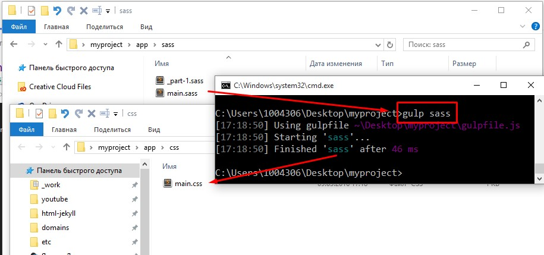
Наблюдение за изменениями в файлах (Gulp Watch)
Gulp поддерживает метод watch для проверки сохраняемых файлов и имеет следующий синтаксис:
gulp.watch('watch-files', ['task1', 'task2']);
Если мы, например, хотим наблюдать за всеми изменениями в файлах sass нашего проекта, то можем использовать следующую конструкцию:
gulp.watch('app/sass/**/*.sass', ['sass']);
Что мы видим: Gulp наблюдает за всеми sass файлами и при сохранении выполняет таск sass, который автоматически компилирует их в css файлы.
Также, мы можем создать отдельный таск для наблюдения за всеми необходимыми файлами
gulp.task('watch', function() {
gulp.watch('app/sass/**/*.sass', ['sass']); // Наблюдение за sass файлами
// Наблюдение за другими типами файлов
});
Если мы запустим в консоли gulp watch, то Gulp будет автоматически следить за всеми измененями в файлах sass при сохранении и компилировать их в css.
Было бы неплохо в дополнение к этой красоте сделать автоматическую перезагрузку страницы при изменениях в файлах. Для этой задачи нам подойдет Browser Sync.
Автоматическое обновление страниц с использованием Bbrowser Sync
Browser Sync - это отличное решение для LiveReload страниц при сохранении файлов. При чем релоад происходит не только в одном браузере, но и во всех браузерах сети, будь это мобильные устройства или другие компьютеры в одной Wi-Fi сети.
Мы уже умеем устанавливать дополнения для Gulp, поэтому давайте установим Browser Sync в наш проект:
npm i browser-sync --save-dev
И, конечно-же, подключим в файле gulpfile.js, как мы это делали ранее с пакетом gulp-sass.
var gulp = require('gulp'), // Подключаем Gulp
sass = require('gulp-sass'), //Подключаем Sass пакет,
browserSync = require('browser-sync'); // Подключаем Browser Sync
Создаем таск для Browser Sync:
gulp.task('browser-sync', function() { // Создаем таск browser-sync
browserSync({ // Выполняем browser Sync
server: { // Определяем параметры сервера
baseDir: 'app' // Директория для сервера - app
},
notify: false // Отключаем уведомления
});
});
Отлично! Наш сервер для работы и автоматического релоада готов. Теперь давайте последим за изменениями в Sass. Если файл Sass обновляется, автоматически инжектим в HTML измененный CSS файл:
gulp.task('sass', function(){ // Создаем таск Sass
return gulp.src('app/sass/**/*.sass') // Берем источник
.pipe(sass()) // Преобразуем Sass в CSS посредством gulp-sass
.pipe(gulp.dest('app/css')) // Выгружаем результата в папку app/css
.pipe(browserSync.reload({stream: true})) // Обновляем CSS на странице при изменении
});
Все, что нам осталось сделать - это запустить таск browser-sync перед тем, как запустится gulp watch. Немного модифицируем таск watch, добавив выполнение browser-sync и sass до запуска watch:
gulp.task('watch', ['browser-sync', 'sass'], function() {
gulp.watch('app/sass/**/*.sass', ['sass']); // Наблюдение за sass файлами
// Наблюдение за другими типами файлов
});
Обратите внимание, что мы выполняем таски ['browser-sync', 'sass'] до запуска watch, так как их выполнение необходимо нам для корректного отображения изменений на момент запуска сервера.
Расположим таск watch после всех других тасков и в результате получим такой gulpfile.js:
var gulp = require('gulp'), // Подключаем Gulp
sass = require('gulp-sass'), //Подключаем Sass пакет,
browserSync = require('browser-sync'); // Подключаем Browser Sync
gulp.task('sass', function(){ // Создаем таск Sass
return gulp.src('app/sass/**/*.sass') // Берем источник
.pipe(sass()) // Преобразуем Sass в CSS посредством gulp-sass
.pipe(gulp.dest('app/css')) // Выгружаем результата в папку app/css
.pipe(browserSync.reload({stream: true})) // Обновляем CSS на странице при изменении
});
gulp.task('browser-sync', function() { // Создаем таск browser-sync
browserSync({ // Выполняем browserSync
server: { // Определяем параметры сервера
baseDir: 'app' // Директория для сервера - app
},
notify: false // Отключаем уведомления
});
});
gulp.task('watch', ['browser-sync', 'sass'], function() {
gulp.watch('app/sass/**/*.sass', ['sass']); // Наблюдение за sass файлами
// Наблюдение за другими типами файлов
});
Для того, чтобы следить за изменениями в браузере, сделаем соответствующую разметку в файле index.html директории app с подключением файла стилей main.css:
<!DOCTYPE html> <html lang="en"> <head> <meta charset="UTF-8"> <title>Document</title> <link rel="stylesheet" href="css/main.css"> </head> <body> </body> </html>
Результат завораживает:
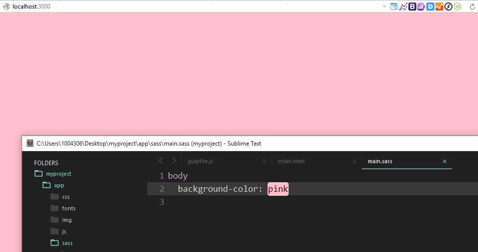Давайте разберемся, что у нас происходит в консоли:
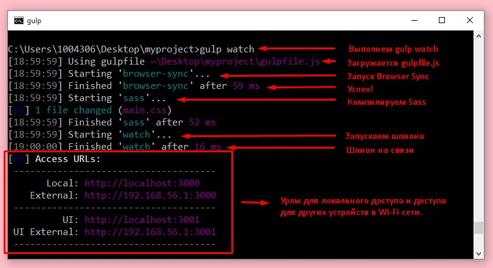После того, как мы нарадуемся результату, встает весьма ожидаемый вопрос - а как, собтвенно, обновлять страницу при сохранении HTML и JS?
И эта задача нам по плечу:
gulp.task('watch', ['browser-sync', 'sass'], function() {
gulp.watch('app/sass/**/*.sass', ['sass']); // Наблюдение за sass файлами в папке sass
gulp.watch('app/*.html', browserSync.reload); // Наблюдение за HTML файлами в корне проекта
gulp.watch('app/js/**/*.js', browserSync.reload); // Наблюдение за JS файлами в папке js
});
Здесь мы используем функцию browserSync.reload, которую нам любезно предоставил пакет Browser Sync. Обратите внимание на выборку файлов для слежения.
В принципе, мы уже имеем довольно продвинутое рабочее окружение. Но двигаемся дальше, это не все, на что способен Gulp.
Оптимизация JavaScript
Давайте рассмотрим, как можно оптимизировать JS файлы проекта. Чаще всего, в оптимизации нуждаются библиотеки и сторонние jQuery и JavaScript плагины. Давайте создадим в папке app паку libs, которая будет содержать необходимые проекту библиотеки. Все библиотеки будем размещать в отдельных папках. Для установки новых библиотек я советую использовать Bower.
Установим Bower:
npm i -g bower
Обратите внимание, что для работы Bower необходим установленный Git.
Теперь в папке проекта создадим файл .bowerrc, в который напишем:
{
"directory" : "app/libs/"
}
Если вы пользователь ОС Windows, у вас не получится создать файл, начинающийся с точки. Воспользуйтесь FileZilla или каким-нибудь файловым менеджером для этой задачи.
Данной настройкой мы указываем путь по умолчанию для установки плагинов с помощью Bower.
Установим jQuery и Magnific Popup, для примера:
bower i jquery magnific-popup
Круть:
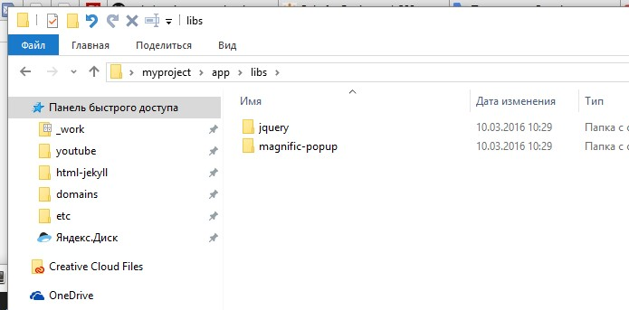Обратите внимание, что все (ну, или почти все) плагины имеют папку dist, об этом мы говорили ранее. В этой папке располагаются готовые файлы продакшена, которые мы и будем использовать в нашем проекте.
Давайте создадим таск scripts, который будет собирать все JS файлы библиотек в один и минифицировать файл. Для этого установим 2 пакета: gulp-concat и gulp-uglifyjs.
npm i --save-dev gulp-concat gulp-uglifyjs
Подключим новые библиотеки в gulpfile.js:
var gulp = require('gulp'), // Подключаем Gulp
sass = require('gulp-sass'), //Подключаем Sass пакет,
browserSync = require('browser-sync'), // Подключаем Browser Sync
concat = require('gulp-concat'), // Подключаем gulp-concat (для конкатенации файлов)
uglify = require('gulp-uglifyjs'); // Подключаем gulp-uglifyjs (для сжатия JS)
Создаем задачу для сборки и сжатия всех библиотек (перед watch):
gulp.task('scripts', function() {
return gulp.src([ // Берем все необходимые библиотеки
'app/libs/jquery/dist/jquery.min.js', // Берем jQuery
'app/libs/magnific-popup/dist/jquery.magnific-popup.min.js' // Берем Magnific Popup
])
.pipe(concat('libs.min.js')) // Собираем их в кучу в новом файле libs.min.js
.pipe(uglify()) // Сжимаем JS файл
.pipe(gulp.dest('app/js')); // Выгружаем в папку app/js
});
Давайте проверим, как работает наш новый таск scripts, выполнив в терминале:
gulp scripts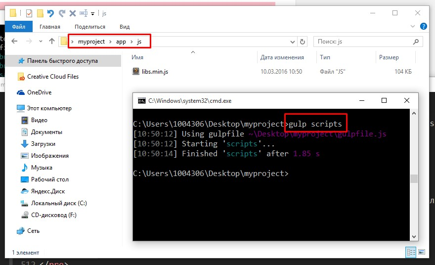
Выполнение таска scripts можно запустить перед выполнением watch:
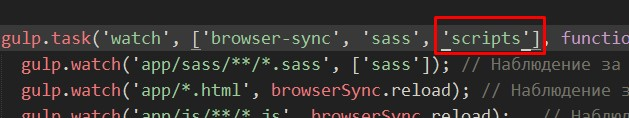Далее можно подключить к проекту все необходимые CSS файлы библиотек. В нашем случае, только одна библиотека нуждается в подключении - это Magnific Popup. Сделаем это через @import в Sass фале sass/libs.sass:
@import "app/libs/magnific-popup/dist/magnific-popup" // Импортируем библиотеку Magnific Popup
Обратите внимание, что при импорте в Sass простых CSS файлов библиотек, расширение файла .css не указывается.
На выходе, в папке app/css мы получаем дополнительно к main.css файл libs.css, который содержит стили всех библиотек. Файл main.css нет особого смысла минифицировать, так как он содержит кастомные (пользовательские) стили. А вот файл libs.css мы с удовольствием минифицируем.
Для минификации CSS установим пакеты gulp-cssnano и gulp-rename:
npm i gulp-cssnano gulp-rename --save-dev
И подключим их в нашем gulpfile.js:
var gulp = require('gulp'), // Подключаем Gulp
sass = require('gulp-sass'), //Подключаем Sass пакет,
browserSync = require('browser-sync'), // Подключаем Browser Sync
concat = require('gulp-concat'), // Подключаем gulp-concat (для конкатенации файлов)
uglify = require('gulp-uglifyjs'), // Подключаем gulp-uglifyjs (для сжатия JS)
cssnano = require('gulp-cssnano'), // Подключаем пакет для минификации CSS
rename = require('gulp-rename'); // Подключаем библиотеку для переименования файлов
И создадим соответствующий таск css-libs. Сразу добавим данный таск в watch для того, чтобы библиотеки собирались в процессе запуска проекта. Таск sass лучше вызвать до запуска css-libs, чтобы нам было что минифицировать:
gulp.task('css-libs', ['sass'], function() {
return gulp.src('app/css/libs.css') // Выбираем файл для минификации
.pipe(cssnano()) // Сжимаем
.pipe(rename({suffix: '.min'})) // Добавляем суффикс .min
.pipe(gulp.dest('app/css')); // Выгружаем в папку app/css
});
gulp.task('watch', ['browser-sync', 'css-libs', 'scripts'], function() {
gulp.watch('app/sass/**/*.sass', ['sass']); // Наблюдение за sass файлами в папке sass
gulp.watch('app/*.html', browserSync.reload); // Наблюдение за HTML файлами в корне проекта
gulp.watch('app/js/**/*.js', browserSync.reload); // Наблюдение за JS файлами в папке js
});
Ура:
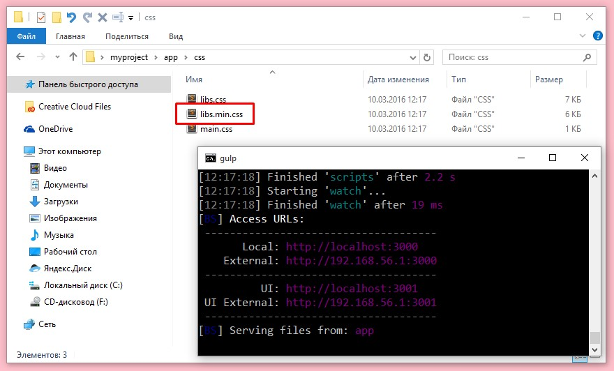Подготовка к продакшену
Для продакшена (сборки в папку dist) мы создадим отдельный таск build в конце gulpfile.js. В данной инструкции мы осуществим сборку Sass, JS и выгрузку того, что у нас готово в папку dist.
gulp.task('build', ['sass', 'scripts'], function() {
var buildCss = gulp.src([ // Переносим CSS стили в продакшен
'app/css/main.css',
'app/css/libs.min.css'
])
.pipe(gulp.dest('dist/css'))
var buildFonts = gulp.src('app/fonts/**/*') // Переносим шрифты в продакшен
.pipe(gulp.dest('dist/fonts'))
var buildJs = gulp.src('app/js/**/*') // Переносим скрипты в продакшен
.pipe(gulp.dest('dist/js'))
var buildHtml = gulp.src('app/*.html') // Переносим HTML в продакшен
.pipe(gulp.dest('dist'));
});
Здесь, присваивая переменным какие-либо действия, мы их выполняем. Таким образом можно выполнять мультизадачные таски. Можно и не присваивать, но мы сделаем так, ибо красивше.
Все прекрасно, но всегда есть одно "Но". Перед тем, как собирать проект нам желательно бы очистить папку dist, чтобы не оставалось лишних потрохов от предыдущих итераций с нашим проектом.
Установим и подключим пакет del:
npm i del --save-dev
var gulp = require('gulp'), // Подключаем Gulp
sass = require('gulp-sass'), //Подключаем Sass пакет,
browserSync = require('browser-sync'), // Подключаем Browser Sync
concat = require('gulp-concat'), // Подключаем gulp-concat (для конкатенации файлов)
uglify = require('gulp-uglifyjs'), // Подключаем gulp-uglifyjs (для сжатия JS)
cssnano = require('gulp-cssnano'), // Подключаем пакет для минификации CSS
rename = require('gulp-rename'), // Подключаем библиотеку для переименования файлов
del = require('del'); // Подключаем библиотеку для удаления файлов и папок
Создаем таск очистки clean и добавляем его выполнение перед выполнение build:
gulp.task('clean', function() {
return del.sync('dist'); // Удаляем папку dist перед сборкой
});
gulp.task('build', ['clean', 'sass', 'scripts'], function() {
var buildCss = gulp.src([ // Переносим библиотеки в продакшен
'app/css/main.css',
'app/css/libs.min.css'
])
.pipe(gulp.dest('dist/css'))
var buildFonts = gulp.src('app/fonts/**/*') // Переносим шрифты в продакшен
.pipe(gulp.dest('dist/fonts'))
var buildJs = gulp.src('app/js/**/*') // Переносим скрипты в продакшен
.pipe(gulp.dest('dist/js'))
var buildHtml = gulp.src('app/*.html') // Переносим HTML в продакшен
.pipe(gulp.dest('dist'));
});
Оптимизация изображений
Как вы могли заметить, в нашем проекте на продакшене не хватает изображений. Давайте исправим это недоразумение и добавим обработку изображений в наш проект.
В папке app/img есть 3 изображения, которые нам необходимо перенести в папку продакшена, оптимизируя.
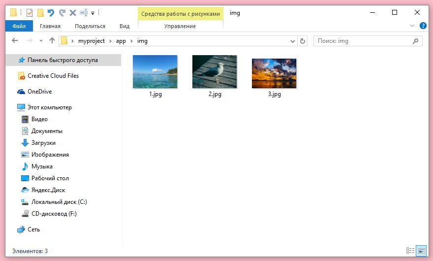Для оптимизации изображений установим 2 пакета (gulp-imagemin, imagemin-pngquant) и подключим их:
npm i gulp-imagemin imagemin-pngquant --save-dev
var gulp = require('gulp'), // Подключаем Gulp
sass = require('gulp-sass'), //Подключаем Sass пакет,
browserSync = require('browser-sync'), // Подключаем Browser Sync
concat = require('gulp-concat'), // Подключаем gulp-concat (для конкатенации файлов)
uglify = require('gulp-uglifyjs'), // Подключаем gulp-uglifyjs (для сжатия JS)
cssnano = require('gulp-cssnano'), // Подключаем пакет для минификации CSS
rename = require('gulp-rename'), // Подключаем библиотеку для переименования файлов
del = require('del'), // Подключаем библиотеку для удаления файлов и папок
imagemin = require('gulp-imagemin'), // Подключаем библиотеку для работы с изображениями
pngquant = require('imagemin-pngquant'); // Подключаем библиотеку для работы с png
Далее создадим таск img для сжатия изображений на продакшен и вызовем его после очистки:
gulp.task('img', function() {
return gulp.src('app/img/**/*') // Берем все изображения из app
.pipe(imagemin({ // Сжимаем их с наилучшими настройками
interlaced: true,
progressive: true,
svgoPlugins: [{removeViewBox: false}],
use: [pngquant()]
}))
.pipe(gulp.dest('dist/img')); // Выгружаем на продакшен
});
gulp.task('build', ['clean', 'img', 'sass', 'scripts'], function() {
var buildCss = gulp.src([ // Переносим библиотеки в продакшен
'app/css/main.css',
'app/css/libs.min.css'
])
.pipe(gulp.dest('dist/css'))
var buildFonts = gulp.src('app/fonts/**/*') // Переносим шрифты в продакшен
.pipe(gulp.dest('dist/fonts'))
var buildJs = gulp.src('app/js/**/*') // Переносим скрипты в продакшен
.pipe(gulp.dest('dist/js'))
var buildHtml = gulp.src('app/*.html') // Переносим HTML в продакшен
.pipe(gulp.dest('dist'));
});
Все прекрасно. До тех пор, пока количество изображений в проекте не превышает 3 шт. Большое количество картинок будет обрабатываться значительно дольше, поэтому к обработке изображений было бы неплохо добавить кеш, чтобы картинки кешировались, экономя наше время.
Установи м подключим gulp-cache:
npm i gulp-cache --save-dev
var gulp = require('gulp'), // Подключаем Gulp
sass = require('gulp-sass'), //Подключаем Sass пакет,
browserSync = require('browser-sync'), // Подключаем Browser Sync
concat = require('gulp-concat'), // Подключаем gulp-concat (для конкатенации файлов)
uglify = require('gulp-uglifyjs'), // Подключаем gulp-uglifyjs (для сжатия JS)
cssnano = require('gulp-cssnano'), // Подключаем пакет для минификации CSS
rename = require('gulp-rename'), // Подключаем библиотеку для переименования файлов
del = require('del'), // Подключаем библиотеку для удаления файлов и папок
imagemin = require('gulp-imagemin'), // Подключаем библиотеку для работы с изображениями
pngquant = require('imagemin-pngquant'), // Подключаем библиотеку для работы с png
cache = require('gulp-cache'); // Подключаем библиотеку кеширования
Модифицируем таск img:
gulp.task('img', function() {
return gulp.src('app/img/**/*') // Берем все изображения из app
.pipe(cache(imagemin({ // Сжимаем их с наилучшими настройками с учетом кеширования
interlaced: true,
progressive: true,
svgoPlugins: [{removeViewBox: false}],
use: [pngquant()]
})))
.pipe(gulp.dest('dist/img')); // Выгружаем на продакшен
});
Автоматическое создание префиксов CSS с помощью Gulp
Вендорные префиксы необходимы для обеспечения максимальной совместимости со всеми современными браузерами. Было бы логично сделать автоматическое добавление префиксов, чтобы написав в CSS или Sass:
display: flex
Мы получили на выходе:
display: -webkit-flex; display: -moz-flex; display: -ms-flex; display: -o-flex; display: flex;
Установим пакет gulp-autoprefixer и подключим его в gulpfile.js:
npm i --save-dev gulp-autoprefixer
var gulp = require('gulp'), // Подключаем Gulp
sass = require('gulp-sass'), //Подключаем Sass пакет,
browserSync = require('browser-sync'), // Подключаем Browser Sync
concat = require('gulp-concat'), // Подключаем gulp-concat (для конкатенации файлов)
uglify = require('gulp-uglifyjs'), // Подключаем gulp-uglifyjs (для сжатия JS)
cssnano = require('gulp-cssnano'), // Подключаем пакет для минификации CSS
rename = require('gulp-rename'), // Подключаем библиотеку для переименования файлов
del = require('del'), // Подключаем библиотеку для удаления файлов и папок
imagemin = require('gulp-imagemin'), // Подключаем библиотеку для работы с изображениями
pngquant = require('imagemin-pngquant'), // Подключаем библиотеку для работы с png
cache = require('gulp-cache'), // Подключаем библиотеку кеширования
autoprefixer = require('gulp-autoprefixer');// Подключаем библиотеку для автоматического добавления префиксов
И модифицируем наш таск sass:
gulp.task('sass', function(){ // Создаем таск Sass
return gulp.src('app/sass/**/*.sass') // Берем источник
.pipe(sass()) // Преобразуем Sass в CSS посредством gulp-sass
.pipe(autoprefixer(['last 15 versions', '> 1%!&(MISSING)#39;, 'ie 8', 'ie 7'], { cascade: true })) // Создаем префиксы
.pipe(gulp.dest('app/css')) // Выгружаем результата в папку app/css
.pipe(browserSync.reload({stream: true})) // Обновляем CSS на странице при изменении
});
Дефолтный таск Gulp
Итак, мы имеем 2 главных таска - gulp watch - для работы над проектом в режиме "онлайн" и gulp build - для сборки проекта на продакшен без лишних файлов, папок и со сжатыми картинками. Так как чаще всего нам нужен будет таск watch, можно повесить его на дефолтный таск, чтобы не писать в консоли постоянно gulp watch, а писать просто gulp.
gulp.task('default', ['watch']);
Также, необходимо создать автономный таск для очистки кеша Gulp, чтобы его можно было вызывать простой командой gulp clear:
gulp.task('clear', function () {
return cache.clearAll();
})
Если у вас возникнут проблемы с изображениями или другими кешируемыми файлами, просто почистите кеш.
В результате, у нас должен получиться такой gulpfile.js:
var gulp = require('gulp'), // Подключаем Gulp
sass = require('gulp-sass'), //Подключаем Sass пакет,
browserSync = require('browser-sync'), // Подключаем Browser Sync
concat = require('gulp-concat'), // Подключаем gulp-concat (для конкатенации файлов)
uglify = require('gulp-uglifyjs'), // Подключаем gulp-uglifyjs (для сжатия JS)
cssnano = require('gulp-cssnano'), // Подключаем пакет для минификации CSS
rename = require('gulp-rename'), // Подключаем библиотеку для переименования файлов
del = require('del'), // Подключаем библиотеку для удаления файлов и папок
imagemin = require('gulp-imagemin'), // Подключаем библиотеку для работы с изображениями
pngquant = require('imagemin-pngquant'), // Подключаем библиотеку для работы с png
cache = require('gulp-cache'), // Подключаем библиотеку кеширования
autoprefixer = require('gulp-autoprefixer');// Подключаем библиотеку для автоматического добавления префиксов
gulp.task('sass', function(){ // Создаем таск Sass
return gulp.src('app/sass/**/*.sass') // Берем источник
.pipe(sass()) // Преобразуем Sass в CSS посредством gulp-sass
.pipe(autoprefixer(['last 15 versions', '> 1%!&(MISSING)#39;, 'ie 8', 'ie 7'], { cascade: true })) // Создаем префиксы
.pipe(gulp.dest('app/css')) // Выгружаем результата в папку app/css
.pipe(browserSync.reload({stream: true})) // Обновляем CSS на странице при изменении
});
gulp.task('browser-sync', function() { // Создаем таск browser-sync
browserSync({ // Выполняем browserSync
server: { // Определяем параметры сервера
baseDir: 'app' // Директория для сервера - app
},
notify: false // Отключаем уведомления
});
});
gulp.task('scripts', function() {
return gulp.src([ // Берем все необходимые библиотеки
'app/libs/jquery/dist/jquery.min.js', // Берем jQuery
'app/libs/magnific-popup/dist/jquery.magnific-popup.min.js' // Берем Magnific Popup
])
.pipe(concat('libs.min.js')) // Собираем их в кучу в новом файле libs.min.js
.pipe(uglify()) // Сжимаем JS файл
.pipe(gulp.dest('app/js')); // Выгружаем в папку app/js
});
gulp.task('css-libs', ['sass'], function() {
return gulp.src('app/css/libs.css') // Выбираем файл для минификации
.pipe(cssnano()) // Сжимаем
.pipe(rename({suffix: '.min'})) // Добавляем суффикс .min
.pipe(gulp.dest('app/css')); // Выгружаем в папку app/css
});
gulp.task('watch', ['browser-sync', 'css-libs', 'scripts'], function() {
gulp.watch('app/sass/**/*.sass', ['sass']); // Наблюдение за sass файлами в папке sass
gulp.watch('app/*.html', browserSync.reload); // Наблюдение за HTML файлами в корне проекта
gulp.watch('app/js/**/*.js', browserSync.reload); // Наблюдение за JS файлами в папке js
});
gulp.task('clean', function() {
return del.sync('dist'); // Удаляем папку dist перед сборкой
});
gulp.task('img', function() {
return gulp.src('app/img/**/*') // Берем все изображения из app
.pipe(cache(imagemin({ // Сжимаем их с наилучшими настройками с учетом кеширования
interlaced: true,
progressive: true,
svgoPlugins: [{removeViewBox: false}],
use: [pngquant()]
})))
.pipe(gulp.dest('dist/img')); // Выгружаем на продакшен
});
gulp.task('build', ['clean', 'img', 'sass', 'scripts'], function() {
var buildCss = gulp.src([ // Переносим библиотеки в продакшен
'app/css/main.css',
'app/css/libs.min.css'
])
.pipe(gulp.dest('dist/css'))
var buildFonts = gulp.src('app/fonts/**/*') // Переносим шрифты в продакшен
.pipe(gulp.dest('dist/fonts'))
var buildJs = gulp.src('app/js/**/*') // Переносим скрипты в продакшен
.pipe(gulp.dest('dist/js'))
var buildHtml = gulp.src('app/*.html') // Переносим HTML в продакшен
.pipe(gulp.dest('dist'));
});
gulp.task('clear', function () {
return cache.clearAll();
})
gulp.task('default', ['watch']);
Проект-пример из данного урока вы можете посмотреть на GitHub и скачать: https://github.com/agragregra/gulp-lesson
Чтобы установить все пакеты и зависимости для скачанного примера, выполните команду npm i в папке проекта.
На этом все. Помните - к любому плагину для Gulp есть хорошая документация по подключению и использованию на npmjs.com или на страничке GitHub. Спасибо за внимание, друзья!